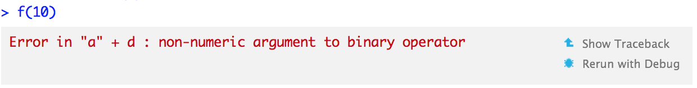
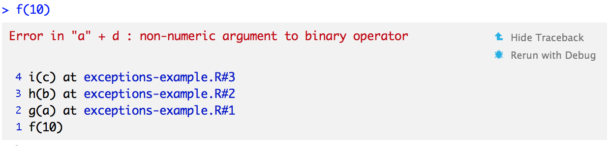

7 Debugging, condition handling, and defensive programming
What happens when something goes wrong with your R code? What do you do? What tools do you have to address the problem? This chapter will teach you how to fix unanticipated problems (debugging), show you how functions can communicate problems and how you can take action based on those communications (condition handling), and teach you how to avoid common problems before they occur (defensive programming).
Debugging is the art and science of fixing unexpected problems in your code. In this section you’ll learn the tools and techniques that help you get to the root cause of an error. You’ll learn general strategies for debugging, useful R functions like traceback() and browser(), and interactive tools in RStudio.
Not all problems are unexpected. When writing a function, you can often anticipate potential problems (like a non-existent file or the wrong type of input). Communicating these problems to the user is the job of conditions: errors, warnings, and messages.
Fatal errors are raised by
stop()and force all execution to terminate. Errors are used when there is no way for a function to continue.Warnings are generated by
warning()and are used to display potential problems, such as when some elements of a vectorised input are invalid, likelog(-1:2).Messages are generated by
message()and are used to give informative output in a way that can easily be suppressed by the user (?suppressMessages()). I often use messages to let the user know what value the function has chosen for an important missing argument.
Conditions are usually displayed prominently, in a bold font or coloured red depending on your R interface. You can tell them apart because errors always start with “Error” and warnings with “Warning message”. Function authors can also communicate with their users with print() or cat(), but I think that’s a bad idea because it’s hard to capture and selectively ignore this sort of output. Printed output is not a condition, so you can’t use any of the useful condition handling tools you’ll learn about below.
Condition handling tools, like withCallingHandlers(), tryCatch(), and try() allow you to take specific actions when a condition occurs. For example, if you’re fitting many models, you might want to continue fitting the others even if one fails to converge. R offers an exceptionally powerful condition handling system based on ideas from Common Lisp, but it’s currently not very well documented or often used. This chapter will introduce you to the most important basics, but if you want to learn more, I recommend the following two sources:
A prototype of a condition system for R by Robert Gentleman and Luke Tierney. This describes an early version of R’s condition system. While the implementation has changed somewhat since this document was written, it provides a good overview of how the pieces fit together, and some motivation for its design.
Beyond Exception Handling: Conditions and Restarts by Peter Seibel. This describes exception handling in Lisp, which happens to be very similar to R’s approach. It provides useful motivation and more sophisticated examples. I have provided an R translation of the chapter at http://adv-r.had.co.nz/beyond-exception-handling.html.
The chapter concludes with a discussion of “defensive” programming: ways to avoid common errors before they occur. In the short run you’ll spend more time writing code, but in the long run you’ll save time because error messages will be more informative and will let you narrow in on the root cause more quickly. The basic principle of defensive programming is to “fail fast”, to raise an error as soon as something goes wrong. In R, this takes three particular forms: checking that inputs are correct, avoiding non-standard evaluation, and avoiding functions that can return different types of output.
7.0.0.0.1 Quiz
Want to skip this chapter? Go for it, if you can answer the questions below. Find the answers at the end of the chapter in answers.
How can you find out where an error occurred?
What does
browser()do? List the five useful single-key commands that you can use inside of abrowser()environment.What function do you use to ignore errors in block of code?
Why might you want to create an error with a custom S3 class?
7.0.0.0.2 Outline
Debugging techniques outlines a general approach for finding and resolving bugs.
Debugging tools introduces you to the R functions and RStudio features that help you locate exactly where an error occurred.
Condition handling shows you how you can catch conditions (errors, warnings, and messages) in your own code. This allows you to create code that’s both more robust and more informative in the presence of errors.
Defensive programming introduces you to some important techniques for defensive programming, techniques that help prevent bugs from occurring in the first place.
7.1 Debugging techniques
“Finding your bug is a process of confirming the many things that you believe are true — until you find one which is not true.”
—Norm Matloff
Debugging code is challenging. Many bugs are subtle and hard to find. Indeed, if a bug was obvious, you probably would’ve been able to avoid it in the first place. While it’s true that with a good technique, you can productively debug a problem with just print(), there are times when additional help would be welcome. In this section, we’ll discuss some useful tools, which R and RStudio provide, and outline a general procedure for debugging.
While the procedure below is by no means foolproof, it will hopefully help you to organise your thoughts when debugging. There are four steps:
Realise that you have a bug
If you’re reading this chapter, you’ve probably already completed this step. It is a surprisingly important one: you can’t fix a bug until you know it exists. This is one reason why automated test suites are important when producing high-quality code. Unfortunately, automated testing is outside the scope of this book, but you can read more about it at http://r-pkgs.had.co.nz/tests.html.
Make it repeatable
Once you’ve determined you have a bug, you need to be able to reproduce it on command. Without this, it becomes extremely difficult to isolate its cause and to confirm that you’ve successfully fixed it.
Generally, you will start with a big block of code that you know causes the error and then slowly whittle it down to get to the smallest possible snippet that still causes the error. Binary search is particularly useful for this. To do a binary search, you repeatedly remove half of the code until you find the bug. This is fast because, with each step, you reduce the amount of code to look through by half.
If it takes a long time to generate the bug, it’s also worthwhile to figure out how to generate it faster. The quicker you can do this, the quicker you can figure out the cause.
As you work on creating a minimal example, you’ll also discover similar inputs that don’t trigger the bug. Make note of them: they will be helpful when diagnosing the cause of the bug.
If you’re using automated testing, this is also a good time to create an automated test case. If your existing test coverage is low, take the opportunity to add some nearby tests to ensure that existing good behaviour is preserved. This reduces the chances of creating a new bug.
Figure out where it is
If you’re lucky, one of the tools in the following section will help you to quickly identify the line of code that’s causing the bug. Usually, however, you’ll have to think a bit more about the problem. It’s a great idea to adopt the scientific method. Generate hypotheses, design experiments to test them, and record your results. This may seem like a lot of work, but a systematic approach will end up saving you time. I often waste a lot of time relying on my intuition to solve a bug (“oh, it must be an off-by-one error, so I’ll just subtract 1 here”), when I would have been better off taking a systematic approach.
Fix it and test it
Once you’ve found the bug, you need to figure out how to fix it and to check that the fix actually worked. Again, it’s very useful to have automated tests in place. Not only does this help to ensure that you’ve actually fixed the bug, it also helps to ensure you haven’t introduced any new bugs in the process. In the absence of automated tests, make sure to carefully record the correct output, and check against the inputs that previously failed.
7.2 Debugging tools
To implement a strategy of debugging, you’ll need tools. In this section, you’ll learn about the tools provided by R and the RStudio IDE. RStudio’s integrated debugging support makes life easier by exposing existing R tools in a user friendly way. I’ll show you both the R and RStudio ways so that you can work with whatever environment you use. You may also want to refer to the official RStudio debugging documentation which always reflects the tools in the latest version of RStudio.
There are three key debugging tools:
RStudio’s error inspector and
traceback()which list the sequence of calls that lead to the error.RStudio’s “Rerun with Debug” tool and
options(error = browser)which open an interactive session where the error occurred.RStudio’s breakpoints and
browser()which open an interactive session at an arbitrary location in the code.
I’ll explain each tool in more detail below.
You shouldn’t need to use these tools when writing new functions. If you find yourself using them frequently with new code, you may want to reconsider your approach. Instead of trying to write one big function all at once, work interactively on small pieces. If you start small, you can quickly identify why something doesn’t work. But if you start large, you may end up struggling to identify the source of the problem.
7.2.1 Determining the sequence of calls
The first tool is the call stack, the sequence of calls that lead up to an error. Here’s a simple example: you can see that f() calls g() calls h() calls i() which adds together a number and a string creating a error:
f <- function(a) g(a)
g <- function(b) h(b)
h <- function(c) i(c)
i <- function(d) "a" + d
f(10)When we run this code in RStudio we see:

Two options appear to the right of the error message: “Show Traceback” and “Rerun with Debug”. If you click “Show traceback” you see:

If you’re not using RStudio, you can use traceback() to get the same information:
traceback()
# 4: i(c) at exceptions-example.R#3
# 3: h(b) at exceptions-example.R#2
# 2: g(a) at exceptions-example.R#1
# 1: f(10)Read the call stack from bottom to top: the initial call is f(), which calls g(), then h(), then i(), which triggers the error. If you’re calling code that you source()d into R, the traceback will also display the location of the function, in the form filename.r#linenumber. These are clickable in RStudio, and will take you to the corresponding line of code in the editor.
Sometimes this is enough information to let you track down the error and fix it. However, it’s usually not. traceback() shows you where the error occurred, but not why. The next useful tool is the interactive debugger, which allows you to pause execution of a function and interactively explore its state.
7.2.2 Browsing on error
The easiest way to enter the interactive debugger is through RStudio’s “Rerun with Debug” tool. This reruns the command that created the error, pausing execution where the error occurred. You’re now in an interactive state inside the function, and you can interact with any object defined there. You’ll see the corresponding code in the editor (with the statement that will be run next highlighted), objects in the current environment in the “Environment” pane, the call stack in a “Traceback” pane, and you can run arbitrary R code in the console.
As well as any regular R function, there are a few special commands you can use in debug mode. You can access them either with the RStudio toolbar ( ) or with the keyboard:
) or with the keyboard:
Next,
n: executes the next step in the function. Be careful if you have a variable namedn; to print it you’ll need to doprint(n).Step into,
 or
or s: works like next, but if the next step is a function, it will step into that function so you can work through each line.Finish, or
f: finishes execution of the current loop or function.Continue,
c: leaves interactive debugging and continues regular execution of the function. This is useful if you’ve fixed the bad state and want to check that the function proceeds correctly.Stop,
Q: stops debugging, terminates the function, and returns to the global workspace. Use this once you’ve figured out where the problem is, and you’re ready to fix it and reload the code.
There are two other slightly less useful commands that aren’t available in the toolbar:
Enter: repeats the previous command. I find this too easy to activate accidentally, so I turn it off using
options(browserNLdisabled = TRUE).where: prints stack trace of active calls (the interactive equivalent oftraceback).
To enter this style of debugging outside of RStudio, you can use the error option which specifies a function to run when an error occurs. The function most similar to RStudio’s debug is browser(): this will start an interactive console in the environment where the error occurred. Use options(error = browser) to turn it on, re-run the previous command, then use options(error = NULL) to return to the default error behaviour. You could automate this with the browseOnce() function as defined below:
browseOnce <- function() {
old <- getOption("error")
function() {
options(error = old)
browser()
}
}
options(error = browseOnce())
f <- function() stop("!")
# Enters browser
f()
# Runs normally
f()(You’ll learn more about functions that return functions in Functional programming.)
There are two other useful functions that you can use with the error option:
recoveris a step up frombrowser, as it allows you to enter the environment of any of the calls in the call stack. This is useful because often the root cause of the error is a number of calls back.dump.framesis an equivalent torecoverfor non-interactive code. It creates alast.dump.rdafile in the current working directory. Then, in a later interactive R session, you load that file, and usedebugger()to enter an interactive debugger with the same interface asrecover(). This allows interactive debugging of batch code.# In batch R process ---- dump_and_quit <- function() { # Save debugging info to file last.dump.rda dump.frames(to.file = TRUE) # Quit R with error status q(status = 1) } options(error = dump_and_quit) # In a later interactive session ---- load("last.dump.rda") debugger()
To reset error behaviour to the default, use options(error = NULL). Then errors will print a message and abort function execution.
7.2.3 Browsing arbitrary code
As well as entering an interactive console on error, you can enter it at an arbitrary code location by using either an RStudio breakpoint or browser(). You can set a breakpoint in RStudio by clicking to the left of the line number, or pressing Shift + F9. Equivalently, add browser() where you want execution to pause. Breakpoints behave similarly to browser() but they are easier to set (one click instead of nine key presses), and you don’t run the risk of accidentally including a browser() statement in your source code. There are two small downsides to breakpoints:
There are a few unusual situations in which breakpoints will not work: read breakpoint troubleshooting for more details.
RStudio currently does not support conditional breakpoints, whereas you can always put
browser()inside anifstatement.
As well as adding browser() yourself, there are two other functions that will add it to code:
debug()inserts a browser statement in the first line of the specified function.undebug()removes it. Alternatively, you can usedebugonce()to browse only on the next run.utils::setBreakpoint()works similarly, but instead of taking a function name, it takes a file name and line number and finds the appropriate function for you.
These two functions are both special cases of trace(), which inserts arbitrary code at any position in an existing function. trace() is occasionally useful when you’re debugging code that you don’t have the source for. To remove tracing from a function, use untrace(). You can only perform one trace per function, but that one trace can call multiple functions.
7.2.4 The call stack: traceback(), where, and recover()
Unfortunately, the call stacks printed by traceback(), browser() + where, and recover() are not consistent. The following table shows how the call stacks from a simple nested set of calls are displayed by the three tools.
traceback() |
where |
recover() |
|---|---|---|
4: stop("Error") |
where 1: stop("Error") |
1: f() |
3: h(x) |
where 2: h(x) |
2: g(x) |
2: g(x) |
where 3: g(x) |
3: h(x) |
1: f() |
where 4: f() |
Note that numbering is different between traceback() and where, and that recover() displays calls in the opposite order, and omits the call to stop(). RStudio displays calls in the same order as traceback() but omits the numbers.
7.2.5 Other types of failure
There are other ways for a function to fail apart from throwing an error or returning an incorrect result.
A function may generate an unexpected warning. The easiest way to track down warnings is to convert them into errors with
options(warn = 2)and use the regular debugging tools. When you do this you’ll see some extra calls in the call stack, likedoWithOneRestart(),withOneRestart(),withRestarts(), and.signalSimpleWarning(). Ignore these: they are internal functions used to turn warnings into errors.A function may generate an unexpected message. There’s no built-in tool to help solve this problem, but it’s possible to create one:
message2error <- function(code) { withCallingHandlers(code, message = function(e) stop(e)) } f <- function() g() g <- function() message("Hi!") g() # Hi! message2error(g()) # Error in message("Hi!"): Hi! traceback() # 10: stop(e) at #2 # 9: (function (e) stop(e))(list(message = "Hi!\n", # call = message("Hi!"))) # 8: signalCondition(cond) # 7: doWithOneRestart(return(expr), restart) # 6: withOneRestart(expr, restarts[[1L]]) # 5: withRestarts() # 4: message("Hi!") at #1 # 3: g() # 2: withCallingHandlers(code, message = function(e) stop(e)) # at #2 # 1: message2error(g())As with warnings, you’ll need to ignore some of the calls on the traceback (i.e., the first two and the last six).
A function might never return. This is particularly hard to debug automatically, but sometimes terminating the function and looking at the call stack is informative. Otherwise, use the basic debugging strategies described above.
The worst scenario is that your code might crash R completely, leaving you with no way to interactively debug your code. This indicates a bug in the underlying C code. This is hard to debug. Sometimes an interactive debugger, like
gdb, can be useful, but describing how to use it is beyond the scope of this book.If the crash is caused by base R code, post a reproducible example to R-help. If it’s in a package, contact the package maintainer. If it’s your own C or C++ code, you’ll need to use numerous
print()statements to narrow down the location of the bug, and then you’ll need to use many more print statements to figure out which data structure doesn’t have the properties that you expect.
7.3 Condition handling
Unexpected errors require interactive debugging to figure out what went wrong. Some errors, however, are expected, and you want to handle them automatically. In R, expected errors crop up most frequently when you’re fitting many models to different datasets, such as bootstrap replicates. Sometimes the model might fail to fit and throw an error, but you don’t want to stop everything. Instead, you want to fit as many models as possible and then perform diagnostics after the fact.
In R, there are three tools for handling conditions (including errors) programmatically:
try()gives you the ability to continue execution even when an error occurs.tryCatch()lets you specify handler functions that control what happens when a condition is signalled.withCallingHandlers()is a variant oftryCatch()that establishes local handlers, whereastryCatch()registers exiting handlers. Local handlers are called in the same context as where the condition is signalled, without interrupting the execution of the function. When an exiting handler fromtryCatch()is called, the execution of the function is interrupted and the handler is called.withCallingHandlers()is rarely needed, but is useful to be aware of.
The following sections describe these tools in more detail.
7.3.1 Ignore errors with try
try() allows execution to continue even after an error has occurred. For example, normally if you run a function that throws an error, it terminates immediately and doesn’t return a value:
f1 <- function(x) {
log(x)
10
}
f1("x")
#> Error in log(x): Nicht-numerisches Argument für mathematische FunktionHowever, if you wrap the statement that creates the error in try(), the error message will be printed but execution will continue:
f2 <- function(x) {
try(log(x))
10
}
f2("a")
#> Error in log(x) : non-numeric argument to mathematical function
#> [1] 10You can suppress the message with try(..., silent = TRUE).
To pass larger blocks of code to try(), wrap them in {}:
try({
a <- 1
b <- "x"
a + b
})You can also capture the output of the try() function. If successful, it will be the last result evaluated in the block (just like a function). If unsuccessful it will be an (invisible) object of class “try-error”:
success <- try(1 + 2)
failure <- try("a" + "b")
class(success)
#> [1] "numeric"
class(failure)
#> [1] "try-error"try() is particularly useful when you’re applying a function to multiple elements in a list:
elements <- list(1:10, c(-1, 10), c(TRUE, FALSE), letters)
results <- lapply(elements, log)
#> Warning in FUN(X[[i]], ...): NaNs wurden erzeugt
#> Error in FUN(X[[i]], ...): Nicht-numerisches Argument für mathematische Funktion
results <- lapply(elements, function(x) try(log(x)))
#> Warning in log(x): NaNs wurden erzeugtThere isn’t a built-in function to test for the try-error class, so we’ll define one. Then you can easily find the locations of errors with sapply() (as discussed in Functionals), and extract the successes or look at the inputs that lead to failures.
is.error <- function(x) inherits(x, "try-error")
succeeded <- !vapply(results, is.error, logical(1))
# look at successful results
str(results[succeeded])
#> List of 3
#> $ : num [1:10] 0 0.693 1.099 1.386 1.609 ...
#> $ : num [1:2] NaN 2.3
#> $ : num [1:2] 0 -Inf
# look at inputs that failed
str(elements[!succeeded])
#> List of 1
#> $ : chr [1:26] "a" "b" "c" "d" ...Another useful try() idiom is using a default value if an expression fails. Simply assign the default value outside the try block, and then run the risky code:
default <- NULL
try(default <- read.csv("possibly-bad-input.csv"), silent = TRUE)There is also plyr::failwith(), which makes this strategy even easier to implement. See Function Operators for more details.
7.3.2 Handle conditions with tryCatch()
tryCatch() is a general tool for handling conditions: in addition to errors, you can take different actions for warnings, messages, and interrupts. You’ve seen errors (made by stop()), warnings (warning()) and messages (message()) before, but interrupts are new. They can’t be generated directly by the programmer, but are raised when the user attempts to terminate execution by pressing Ctrl + Break, Escape, or Ctrl + C (depending on the platform).
With tryCatch() you map conditions to handlers, named functions that are called with the condition as an input. If a condition is signalled, tryCatch() will call the first handler whose name matches one of the classes of the condition. The only useful built-in names are error, warning, message, interrupt, and the catch-all condition. A handler function can do anything, but typically it will either return a value or create a more informative error message. For example, the show_condition() function below sets up handlers that return the type of condition signalled:
show_condition <- function(code) {
tryCatch(code,
error = function(c) "error",
warning = function(c) "warning",
message = function(c) "message"
)
}
show_condition(stop("!"))
#> [1] "error"
show_condition(warning("?!"))
#> [1] "warning"
show_condition(message("?"))
#> [1] "message"
# If no condition is captured, tryCatch returns the
# value of the input
show_condition(10)
#> [1] 10You can use tryCatch() to implement try(). A simple implementation is shown below. base::try() is more complicated in order to make the error message look more like what you’d see if tryCatch() wasn’t used. Note the use of conditionMessage() to extract the message associated with the original error.
try2 <- function(code, silent = FALSE) {
tryCatch(code, error = function(c) {
msg <- conditionMessage(c)
if (!silent) message(c)
invisible(structure(msg, class = "try-error"))
})
}
try2(1)
#> [1] 1
try2(stop("Hi"))
try2(stop("Hi"), silent = TRUE)As well as returning default values when a condition is signalled, handlers can be used to make more informative error messages. For example, by modifying the message stored in the error condition object, the following function wraps read.csv() to add the file name to any errors:
read.csv2 <- function(file, ...) {
tryCatch(read.csv(file, ...), error = function(c) {
c$message <- paste0(c$message, " (in ", file, ")")
stop(c)
})
}
read.csv("code/dummy.csv")
#> Error in file(file, "rt"): kann Verbindung nicht öffnen
read.csv2("code/dummy.csv")
#> Error in file(file, "rt"): kann Verbindung nicht öffnen (in code/dummy.csv)Catching interrupts can be useful if you want to take special action when the user tries to abort running code. But be careful, it’s easy to create a loop that you can never escape (unless you kill R)!
# Don't let the user interrupt the code
i <- 1
while(i < 3) {
tryCatch({
Sys.sleep(0.5)
message("Try to escape")
}, interrupt = function(x) {
message("Try again!")
i <<- i + 1
})
}tryCatch() has one other argument: finally. It specifies a block of code (not a function) to run regardless of whether the initial expression succeeds or fails. This can be useful for clean up (e.g., deleting files, closing connections). This is functionally equivalent to using on.exit() but it can wrap smaller chunks of code than an entire function.
7.3.3 withCallingHandlers()
An alternative to tryCatch() is withCallingHandlers(). The difference between the two is that the former establishes exiting handlers while the latter registers local handlers. Here are the main differences between the two kind of handlers:
The handlers in
withCallingHandlers()are called in the context of the call that generated the condition whereas the handlers intryCatch()are called in the context oftryCatch(). This is shown here withsys.calls(), which is the run-time equivalent oftraceback()— it lists all calls leading to the current function.f <- function() g() g <- function() h() h <- function() stop("!") tryCatch(f(), error = function(e) print(sys.calls())) # [[1]] tryCatch(f(), error = function(e) print(sys.calls())) # [[2]] tryCatchList(expr, classes, parentenv, handlers) # [[3]] tryCatchOne(expr, names, parentenv, handlers[[1L]]) # [[4]] value[[3L]](cond) withCallingHandlers(f(), error = function(e) print(sys.calls())) # [[1]] withCallingHandlers(f(), # error = function(e) print(sys.calls())) # [[2]] f() # [[3]] g() # [[4]] h() # [[5]] stop("!") # [[6]] .handleSimpleError( # function (e) print(sys.calls()), "!", quote(h())) # [[7]] h(simpleError(msg, call))This also affects the order in which
on.exit()is called.A related difference is that with
tryCatch(), the flow of execution is interrupted when a handler is called, while withwithCallingHandlers(), execution continues normally when the handler returns. This includes the signalling function which continues its course after having called the handler (e.g.,stop()will continue stopping the program andmessage()orwarning()will continue signalling a message/warning). This is why it is often better to handle a message withwithCallingHandlers()rather thantryCatch(), since the latter will stop the program:message_handler <- function(c) cat("Caught a message!\n") tryCatch(message = message_handler, { message("Someone there?") message("Why, yes!") }) #> Caught a message! withCallingHandlers(message = message_handler, { message("Someone there?") message("Why, yes!") }) #> Caught a message! #> Someone there? #> Caught a message! #> Why, yes!The return value of a handler is returned by
tryCatch(), whereas it is ignored withwithCallingHandlers():f <- function() message("!") tryCatch(f(), message = function(m) 1) #> [1] 1 withCallingHandlers(f(), message = function(m) 1) #> !
These subtle differences are rarely useful, except when you’re trying to capture exactly what went wrong and pass it on to another function. For most purposes, you should never need to use withCallingHandlers().
7.3.4 Custom signal classes
One of the challenges of error handling in R is that most functions just call stop() with a string. That means if you want to figure out if a particular error occurred, you have to look at the text of the error message. This is error prone, not only because the text of the error might change over time, but also because many error messages are translated, so the message might be completely different to what you expect.
R has a little known and little used feature to solve this problem. Conditions are S3 classes, so you can define your own classes if you want to distinguish different types of error. Each condition signalling function, stop(), warning(), and message(), can be given either a list of strings, or a custom S3 condition object. Custom condition objects are not used very often, but are very useful because they make it possible for the user to respond to different errors in different ways. For example, “expected” errors (like a model failing to converge for some input datasets) can be silently ignored, while unexpected errors (like no disk space available) can be propagated to the user.
R doesn’t come with a built-in constructor function for conditions, but we can easily add one. Conditions must contain message and call components, and may contain other useful components. When creating a new condition, it should always inherit from condition and should in most cases inherit from one of error, warning, or message.
condition <- function(subclass, message, call = sys.call(-1), ...) {
structure(
class = c(subclass, "condition"),
list(message = message, call = call),
...
)
}
is.condition <- function(x) inherits(x, "condition")You can signal an arbitrary condition with signalCondition(), but nothing will happen unless you’ve instantiated a custom signal handler (with tryCatch() or withCallingHandlers()). Instead, pass this condition to stop(), warning(), or message() as appropriate to trigger the usual handling. R won’t complain if the class of your condition doesn’t match the function, but in real code you should pass a condition that inherits from the appropriate class: "error" for stop(), "warning" for warning(), and "message" for message().
e <- condition(c("my_error", "error"), "This is an error")
signalCondition(e)
# NULL
stop(e)
# Error: This is an error
w <- condition(c("my_warning", "warning"), "This is a warning")
warning(w)
# Warning message: This is a warning
m <- condition(c("my_message", "message"), "This is a message")
message(m)
# This is a messageYou can then use tryCatch() to take different actions for different types of errors. In this example we make a convenient custom_stop() function that allows us to signal error conditions with arbitrary classes. In a real application, it would be better to have individual S3 constructor functions that you could document, describing the error classes in more detail.
custom_stop <- function(subclass, message, call = sys.call(-1),
...) {
c <- condition(c(subclass, "error"), message, call = call, ...)
stop(c)
}
my_log <- function(x) {
if (!is.numeric(x))
custom_stop("invalid_class", "my_log() needs numeric input")
if (any(x < 0))
custom_stop("invalid_value", "my_log() needs positive inputs")
log(x)
}
tryCatch(
my_log("a"),
invalid_class = function(c) "class",
invalid_value = function(c) "value"
)
#> [1] "class"Note that when using tryCatch() with multiple handlers and custom classes, the first handler to match any class in the signal’s class hierarchy is called, not the best match. For this reason, you need to make sure to put the most specific handlers first:
tryCatch(custom_stop("my_error", "!"),
error = function(c) "error",
my_error = function(c) "my_error"
)
#> [1] "error"
tryCatch(custom_stop("my_error", "!"),
my_error = function(c) "my_error",
error = function(c) "error"
)
#> [1] "my_error"7.3.5 Exercises
Compare the following two implementations of
message2error(). What is the main advantage ofwithCallingHandlers()in this scenario? (Hint: look carefully at the traceback.)message2error <- function(code) { withCallingHandlers(code, message = function(e) stop(e)) } message2error <- function(code) { tryCatch(code, message = function(e) stop(e)) }
7.4 Defensive programming
Defensive programming is the art of making code fail in a well-defined manner even when something unexpected occurs. A key principle of defensive programming is to “fail fast”: as soon as something wrong is discovered, signal an error. This is more work for the author of the function (you!), but it makes debugging easier for users because they get errors earlier rather than later, after unexpected input has passed through several functions.
In R, the “fail fast” principle is implemented in three ways:
Be strict about what you accept. For example, if your function is not vectorised in its inputs, but uses functions that are, make sure to check that the inputs are scalars. You can use
stopifnot(), the assertthat package, or simpleifstatements andstop().Avoid functions that use non-standard evaluation, like
subset,transform, andwith. These functions save time when used interactively, but because they make assumptions to reduce typing, when they fail, they often fail with uninformative error messages. You can learn more about non-standard evaluation in non-standard evaluation.Avoid functions that return different types of output depending on their input. The two biggest offenders are
[andsapply(). Whenever subsetting a data frame in a function, you should always usedrop = FALSE, otherwise you will accidentally convert 1-column data frames into vectors. Similarly, never usesapply()inside a function: always use the strictervapply()which will throw an error if the inputs are incorrect types and return the correct type of output even for zero-length inputs.
There is a tension between interactive analysis and programming. When you’re working interactively, you want R to do what you mean. If it guesses wrong, you want to discover that right away so you can fix it. When you’re programming, you want functions that signal errors if anything is even slightly wrong or underspecified. Keep this tension in mind when writing functions. If you’re writing functions to facilitate interactive data analysis, feel free to guess what the analyst wants and recover from minor misspecifications automatically. If you’re writing functions for programming, be strict. Never try to guess what the caller wants.
7.4.1 Exercises
The goal of the
col_means()function defined below is to compute the means of all numeric columns in a data frame.col_means <- function(df) { numeric <- sapply(df, is.numeric) numeric_cols <- df[, numeric] data.frame(lapply(numeric_cols, mean)) }However, the function is not robust to unusual inputs. Look at the following results, decide which ones are incorrect, and modify
col_means()to be more robust. (Hint: there are two function calls incol_means()that are particularly prone to problems.)col_means(mtcars) col_means(mtcars[, 0]) col_means(mtcars[0, ]) col_means(mtcars[, "mpg", drop = F]) col_means(1:10) col_means(as.matrix(mtcars)) col_means(as.list(mtcars)) mtcars2 <- mtcars mtcars2[-1] <- lapply(mtcars2[-1], as.character) col_means(mtcars2)The following function “lags” a vector, returning a version of
xthat isnvalues behind the original. Improve the function so that it (1) returns a useful error message ifnis not a vector, and (2) has reasonable behaviour whennis 0 or longer thanx.lag <- function(x, n = 1L) { xlen <- length(x) c(rep(NA, n), x[seq_len(xlen - n)]) }
7.5 Quiz answers
The most useful tool to determine where a error occurred is
traceback(). Or use RStudio, which displays it automatically where an error occurs.browser()pauses execution at the specified line and allows you to enter an interactive environment. In that environment, there are five useful commands:n, execute the next command;s, step into the next function;f, finish the current loop or function;c, continue execution normally;Q, stop the function and return to the console.You could use
try()ortryCatch().Because you can then capture specific types of error with
tryCatch(), rather than relying on the comparison of error strings, which is risky, especially when messages are translated.